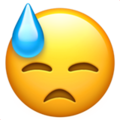
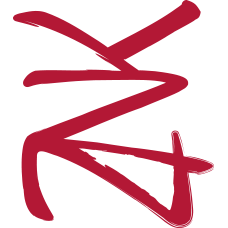

1er cube fixe et sans éclairage : 300 lignes de code 

<animés par la passion>
© Zenika 2019. All rights reserved.
Les concepts...
Todo :
- Explication pipeline
- Explication shaders
- Explication buffers
- Exemple de code
const canvas = document.getElementById("scene");
const gl = canvas.getContext("webgl2");
if (!gl) {
canvas.style.display = "none";
document.getElementById("noContextLayer").style.display = "block";
}